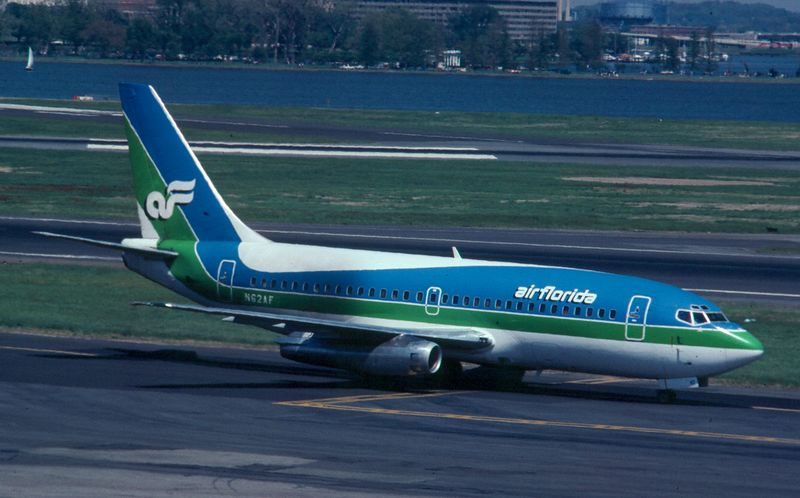
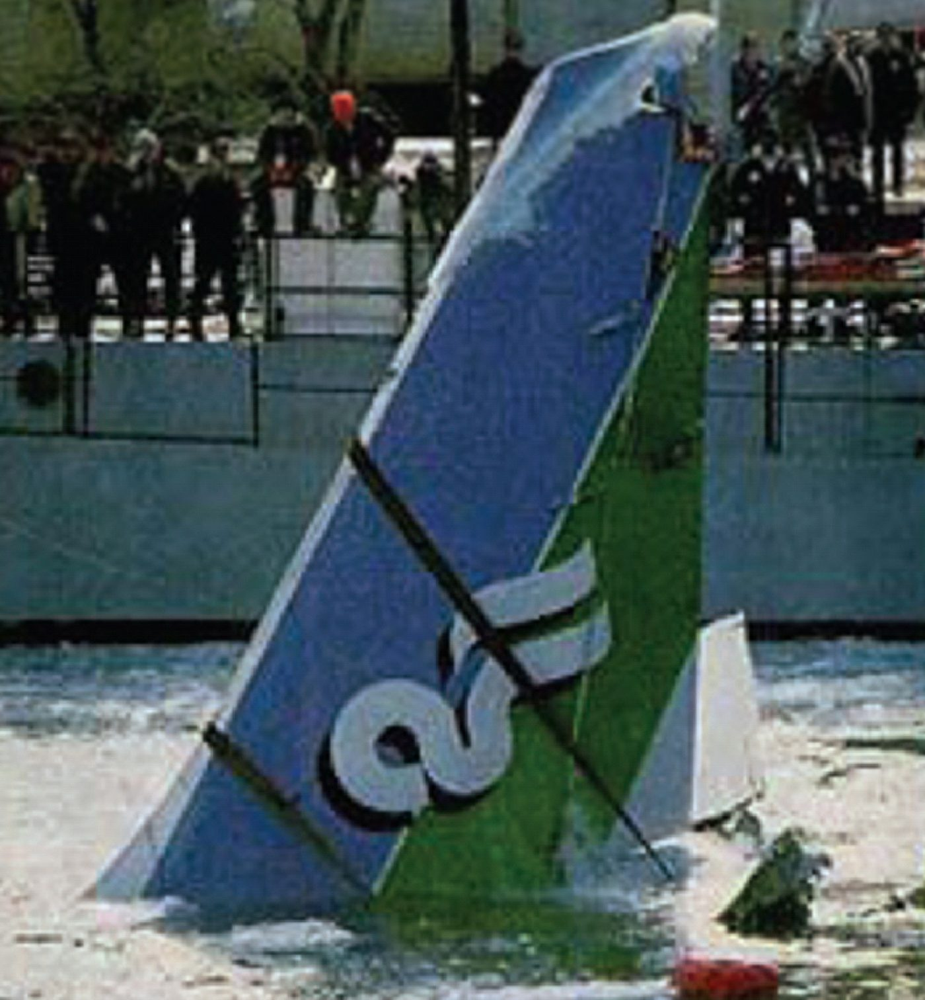
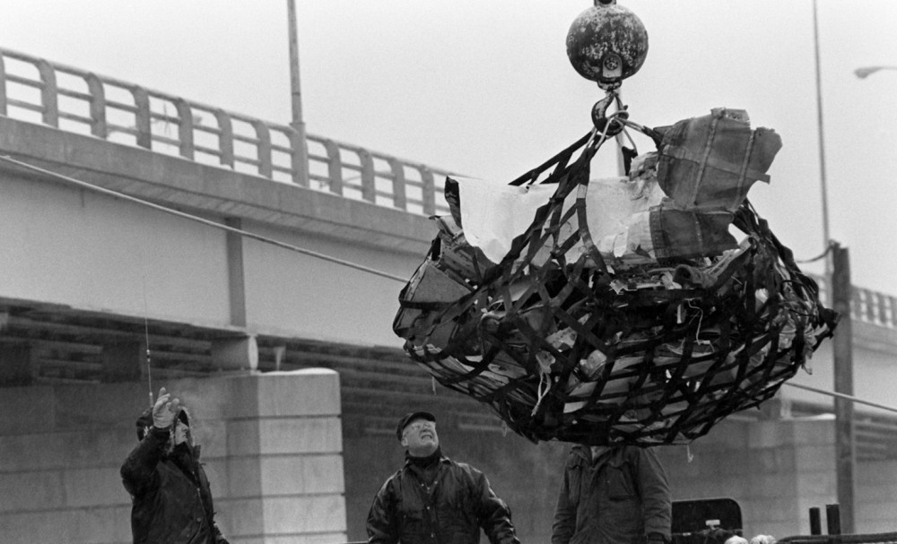
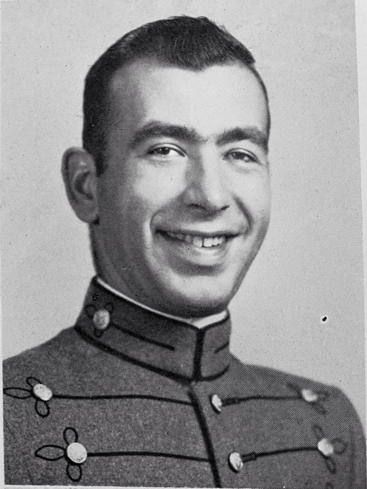
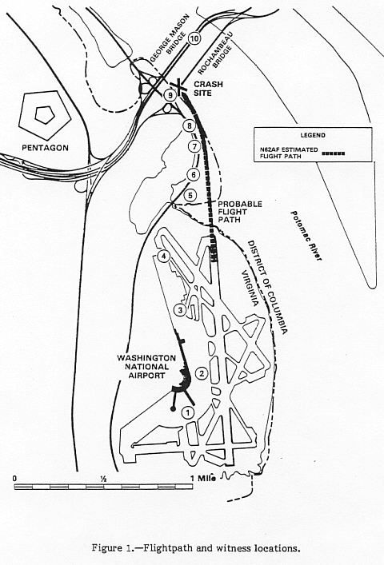

Washington was buried in one of its worst snowstorms in years on January 13, 1982, when Air Florida Flight 90 finally pushed back from National Airport, nearly two hours late. It had been de-iced once, imperfectly, and then left sitting in a taxi queue for another 49 minutes while the snow kept falling. The crew never returned for a second treatment. Less than a minute after leaving the ground, with ice-blocked sensors telling the pilots they had more power than they actually did, the Boeing 737 clipped a bridge crowded with rush-hour traffic and dropped into the frozen Potomac River. Of 79 people aboard, 5 survived. Four motorists on the bridge did not. What happened in the water afterward became, for one ordinary passenger, the most famous act of self-sacrifice in American aviation history.
All times in this case file are Eastern Standard Time, January 13, 1982. Air Florida Flight 90 was scheduled to fly from Washington National Airport to Fort Lauderdale-Hollywood International, with a stop in Tampa, a routine domestic run on an ordinary Boeing 737.

Washington, D.C. was in the grip of one of the heaviest snowstorms it had seen in years, 6.5 inches falling steadily through the afternoon, closing the airport for hours. In command was Captain Larry M. Wheaton, 34, with 8,300 flight hours, though only 1,752 of them on the 737 and a mere eight prior takeoffs in snow. Beside him sat First Officer Roger A. Pettit, 31, with 3,353 hours, 992 on the 737, and just two snowy flights of his own behind him. Three flight attendants, Donna Adams, Marilyn Nichols and Kelly Duncan, worked the cabin.
The aircraft was de-iced once, but the ground crew failed to fit the required protective covers over the pitot tubes, static ports and engine inlets, and the glycol mixture applied was weaker than what had actually been selected. Then, with the airport still digging out and traffic backed up, Flight 90 sat in the taxi queue for 49 minutes after that single treatment, snow continuing to settle on the wings the entire time. The crew discussed returning to the gate for a second de-icing. They chose not to, worried about losing their place in the queue and falling further behind.
At 15:59, Flight 90 began its takeoff roll. Nothing about the moment looked dramatic. The instruments in front of both pilots were already lying to them.
Somewhere during the preflight checklist, amid casual conversation about the weather that violated the sterile-cockpit rule meant to keep a crew focused during critical phases of flight, the engine anti-ice system was left switched off. Without it, the probes that measure engine pressure ratio (EPR), the number the crew relies on to confirm they have enough thrust to fly, iced over during the long, cold, snowy wait on the taxiway.
Correct takeoff power that afternoon called for an EPR reading of 2.04. The ice-blocked probes instead displayed a false, inflated number, while the engines were actually only producing about 1.70 EPR, dangerously insufficient thrust that neither pilot had any instrument left to reveal.
I don't think that's right… ah, maybe it is.
— First Officer Roger Pettit, cockpit voice recorder, during the takeoff rollPettit questioned the readings twice more as the aircraft ran unusually long down the runway before finally lifting off nearly 800 meters later than normal, far later than a properly performing 737 should have needed. Both times, Wheaton dismissed the concern and continued the takeoff. With snow and ice still contaminating the wings' leading edges, a known aerodynamic hazard on the 737, and the engines never producing the power the gauges claimed, the aircraft struggled into the air and never came close to climbing away. It reached a maximum altitude of 352 feet in the roughly 30 seconds it stayed airborne.
Unable to climb, sinking back toward the Potomac it had just crossed, Flight 90 struck the 14th Street Bridge at 16:01, its wheels and lower fuselage tearing through six cars and a truck stopped in rush-hour traffic.
The impact destroyed 97 feet of guardrail and 41 feet of bridge wall before the crippled aircraft continued on, breaking apart as it went, and plunged roughly 200 feet offshore into the Potomac River. The water temperature that afternoon was close to freezing, and a sheet of river ice had to be broken through for anything to reach the surface at all. Four motorists on the bridge were killed by the impact.
The cockpit voice recorder's final seconds capture the moment the crew understood what was actually happening, far too late to change it.

Forward, forward, easy. We only want five hundred. Come on, forward… forward, just barely climb. Stalling, we're falling! Larry, we're going down, Larry…
“I know it,”
Investigators later concluded the accident was, in the strict engineering sense, not survivable for most of those aboard: the fuselage broke apart on impact with the bridge and again on the water. The tail section, structurally the strongest part of the airframe, was where nearly everyone who lived through the crash had been sitting.
Rush-hour traffic on the bridge above meant hundreds of witnesses saw the crash happen. Reaching the six people now struggling in the ice-choked river below was another matter entirely.

A U.S. Park Police helicopter, call sign “Eagle 1,” piloted by Donald W. Usher with paramedic Melvin E. Windsor aboard, reached the scene and began lowering a line and a flotation ring to the survivors clinging to wreckage in the current. Roger Olian, a sheet-metal foreman who saw the crash from his car, was the first civilian into the freezing water, wading out to try to reach people before the helicopter arrived.
Lenny Skutnik, a young federal employee watching from the bank, went further. When the helicopter's line reached passenger Priscilla Tirado, badly injured and too weak from cold and shock to hold on, Skutnik stripped off his coat and boots and dove into the Potomac to pull her to shore himself, an act of instinctive courage that made him, within days, one of the most recognized private citizens in America.
Six people made it out of the wreckage alive into the river. Only five survived to reach the shore. The sixth spent his last minutes making sure the other five did.

Passenger, roughly 46 years old, federal bank examiner
Twice offered the only line down from the helicopter, he passed it to someone else both times.
Williams, a federal bank examiner, was one of six survivors of the initial impact clinging to floating wreckage in the water. As Eagle 1's line and ring came down to the group, witnesses on the bridge above watched him take hold of it, and then hand it to another passenger instead of using it himself. When the helicopter returned, he passed it along again. By the time it came back a third time for him, the wreckage he'd been holding onto had rolled, and he went under. His body was recovered later; he never learned his own name reached the President of the United States.
Twice, twice he handed away the rope that would have saved him first.
— Contemporary account of rescuers' testimony, January 1982The National Transportation Safety Board's investigation, published as report AAR-82-08, concluded this accident was fundamentally a chain of human decisions, not a single mechanical failure.

The Board's probable-cause finding centered on the flight crew: their failure to activate engine anti-ice protection before and during a snowy, prolonged ground delay; their decision to attempt takeoff with snow and ice still contaminating the wings; and, specifically, Captain Wheaton's decision to continue the takeoff after First Officer Pettit twice raised concern about the engine readings rather than rejecting it.
Contributing factors included the inadequate de-icing procedure applied at the gate, the 49-minute delay between that treatment and actual takeoff with snow continuing to fall the entire time, and both pilots' limited experience operating in winter conditions.
Washington spent days recovering wreckage and remains from a river still choked with ice. What followed was both a formal reckoning and a very public act of national gratitude.
The 14th Street span struck by Flight 90 was formally renamed in Williams's honor. He was posthumously awarded the Coast Guard's Gold Lifesaving Medal, alongside Usher, Windsor, Skutnik and Olian, all recognized for actions in the water that afternoon.
Thirteen days after the crash, President Reagan introduced Lenny Skutnik, seated in the gallery, during his State of the Union address, praising his dive into the Potomac. The moment is widely credited with starting the modern tradition of presidents recognizing ordinary citizens as guests of honor at the address.
The investigation led directly to formal de-icing hold-over time regulations: firm limits on how long an aircraft can sit after treatment, in given weather conditions, before it must be de-iced again or the takeoff must wait. Before 1982, that judgment call was left largely to individual crews under schedule pressure.
Flight 90 became a standard case study in pilot training on why anomalous instrument readings, especially ones a colleague has flagged twice, warrant rejecting a takeoff rather than continuing on faith that the numbers are close enough.
Every fact in this case file was cross-referenced against at least two independent sources, anchored by the official NTSB investigation. All links open in a new tab.
The National Transportation Safety Board's complete final report on the accident.
Independent aviation accident database entry archiving the official report's findings.
A concise retrospective on the crash, the rescue, and Arland Williams.
Used as a secondary cross-reference for names, figures and the sequence of events; every fact drawn from it was checked against a primary or independent source above.